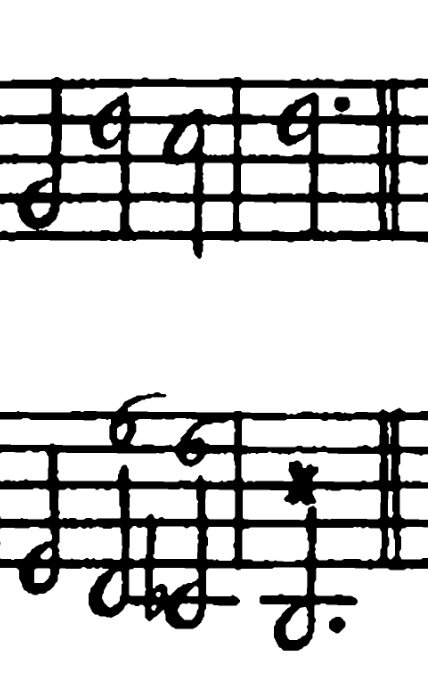
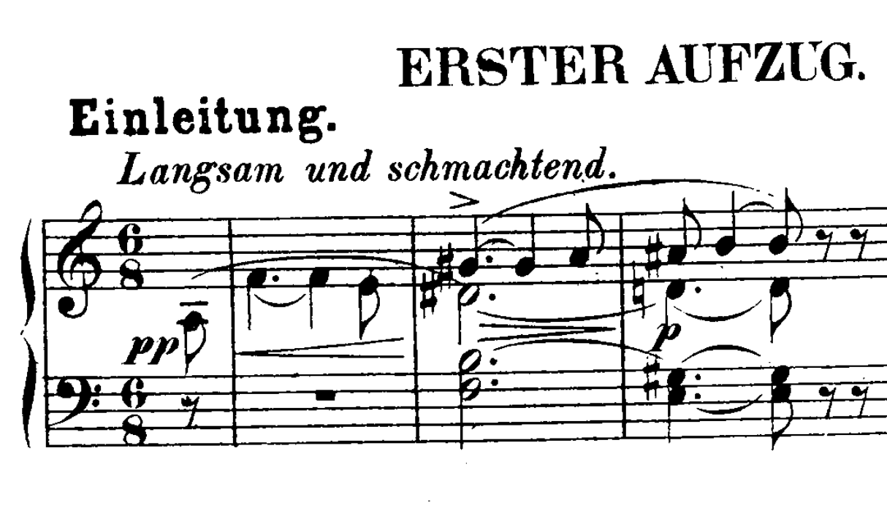

ZHdK · HS 2026
Historische Satzlehre
Hausaufgaben
Kadenz in mi


Arcangelo Corelli, Sonate op. 5 Nr. 5, Adagio
Aufnahme
Richard Wagner, Tristan und Isolde, Einleitung, T. 1–3 (Klavierauszug).
AufnahmeAuthentische Kadenz